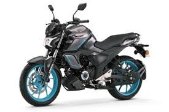
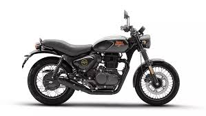
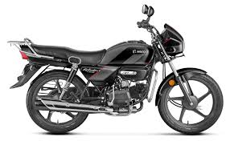

Yamaha R15 V4
The Yamaha R15 V4 is a popular 155cc sports bike in India known for its racing design, good mileage, and strong performance in the entry-level sportbike segment.
Price=₹1.66 lakh

Yamaha FZ new Edition
The newest Yamaha FZ bikes in India are mainly Yamaha FZ‑S FI 2025, Yamaha FZ‑S FI Hybrid, and the recently introduced Yamaha FZ‑Rave. These are 150cc street bikes known for their muscular design and good mileage
Price=₹1.35 lakh

Royal Enfield Hunter 350
The Royal Enfield Hunter 350 is one of the most popular 350cc bikes in India. It is designed mainly for young riders and city riding, with a lighter weight and sporty roadster style compared to other Royal Enfield bikes
Price=₹1.7 lakh – ₹2.05 lakh

Hero Splendor
The Hero Splendor is one of the most popular commuter bikes in India. It is famous for high mileage, low maintenance, and reliability, which is why many people use it for daily travel.
Price=₹1.0 – ₹1.1 lakh